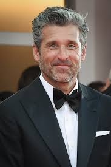

Antonio Lombardi nasce a Terracina(LT) il 12/12/1974.Insieme a suo padre Cosimo,
esattamente nel 1988 fonda il Centro Caravan Europark situato nei possedimenti del vecchio podere
ONC dove è cresciuto da piccolo. Da quel momento in poi la sua passione per questo mondo non è mai diminuita , tutt'ora dopo oltre
30 anni d'esperienza non smette mai di imparare e di sperimentare nuove tecniche. Insieme a Sara Alonzi(proprietaria) gestisce il rimessaggio.
Titoli conseguiti nel corso del tempo:
and still growing...
Numero di telefono: 3385351831
E-mail:antonio.lombardi@centrocaravaneuropark.it
Sara Alonzi nasce a Terracina(LT) il 1/07/1976. A 19 anni, nel 1995, conosce Antonio e esattamente quattro anni dopo si sposano. Ad oggi Sara, oltre ad essere una stupenda mamma, è anche la proprietaria del centro, con il passare del tempo la sua intelligenza ed anche la sua voglia di fare le hanno permesso di organizzare e gestire al meglio le varie risorse ed attività dell'Europark.
Numero di telefono: 3393444567
E-mail:sara.alonzi@centrocaravaneuropark.it